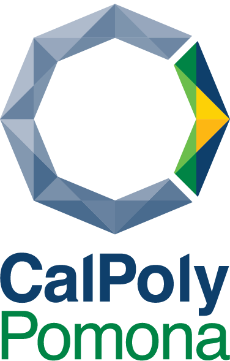
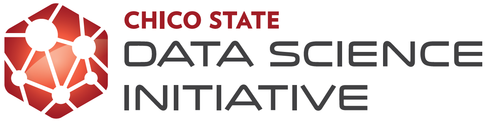
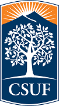
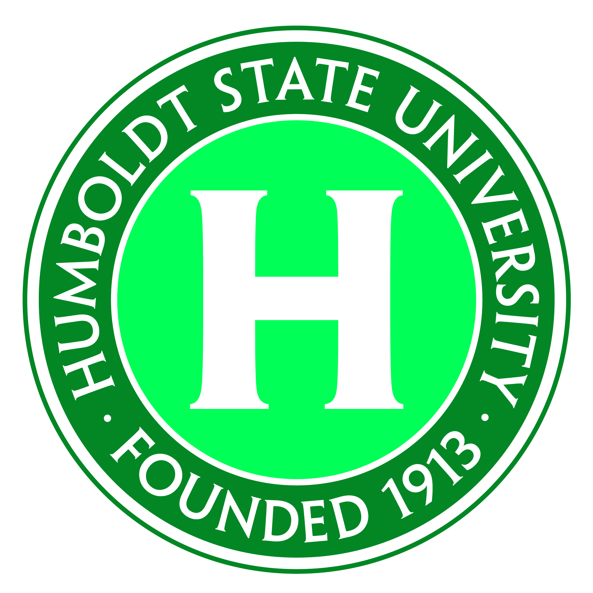
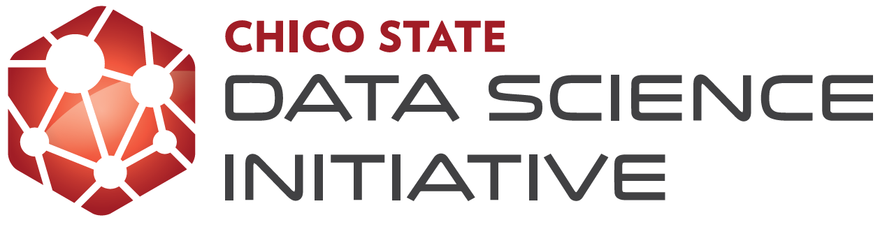
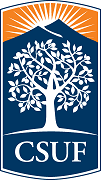
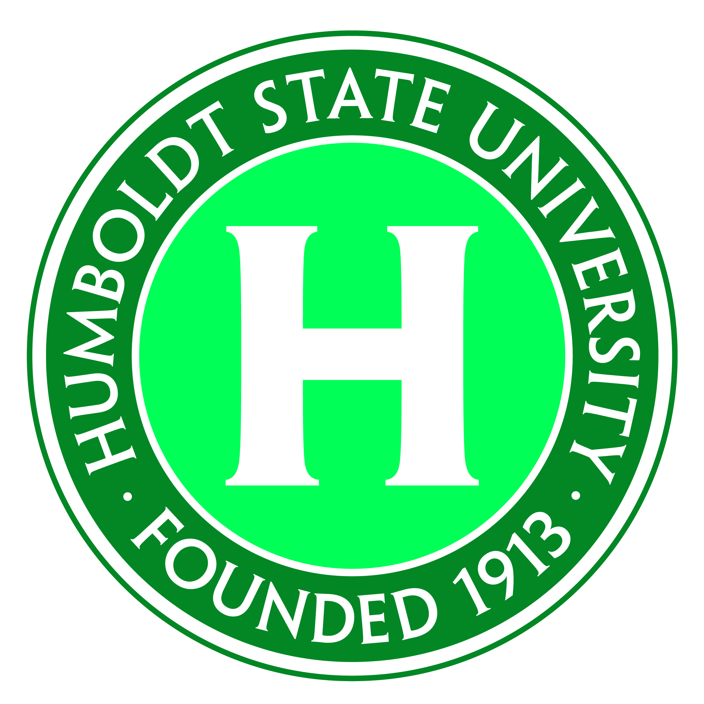

January Presentations
The CSU Math Council Colloquia (MC\(^2\)) series provides CSU faculty in mathematics, statistics, and mathematics education with the opportunity to network and share best practices in any topics related to university level mathematics and statistics education.
Peer Instruction and Tutoring
We hope to connect faculty and staff across the CSU who work on providing academic support services to students in mathematics and statistics courses. In addition to the talks, we’re interested in collecting some information on the structure of the tutoring and peer instruction on the various campuses.
Hosts:
- Bori Mazzag, Professor & Chair of the Department of Mathematics & Computer Scieence, Humboldt State University. borbala.mazzag@humboldt.edu
- Julie Glass, Professor & Chair of the Department of Mathematics; CSU East Bay. julie.glass@csueastbay.edu
Friday January 8th [Zoom Link]
| Time | Name | Affiliation | Title | Abstract |
|---|---|---|---|---|
| 3:00 PM | Cherie Ichinose cichinose@fullerton.edu | CSU Fullerton | Titan Mathematics Apprentice Program | One of Cal State Fullerton’s goals is to expose our students to work-related experiences. Titan Mathematics Apprentice Program (TMAP) is funded through The Noyce Scholarship Program: Transitioning Math Majors into Teaching (TMMT) and private doners. TMAP provides graduate and undergraduate mathematics majors an opportunity to act as an apprentice with mathematics faculty members committed to student-centered and active classrooms, here at CSU Fullerton. During this session we will discuss how our apprentices selected, trained, classroom activities and lessons with success stories surrounded by this program. |
| 3:30 PM | Valerie Otero valerie.otero@colorado.edu | University of Boulder, Colorado | The Learning Assistant (LA) Model and It’s Impacts: Beyond pedagogical content knowled | Learning Assistants (LAs) are undergraduate students who are hired to improve the experiences and outcomes for students enrolled in courses at two- and four-year colleges and universities. Research shows that the presence of LAs in classes has increased student engagement, inclusion, retention, and learning outcomes, especially for students traditionally underrepresented in STEM. When instructors and students had to make emergency transitions to remote instruction, it became clear to campuses that had LA programs that LAs were instrumental in establishing a sense of community, empathy, support, and hope for the students (and faculty) with whom they worked. I will review the central tenants of the Learning Assistant (LA) model along with data from multiple universities. In doing so, I will make inferences about the mechanisms that lead to the program’s growth and valued outcomes. |
| 4:00 PM | Brook Masters & Cindy Wyels & Jason Miller brook.masters@csuci.edu cynthia.wyels@csuci.edu jason.miller@csuci.edu | CSU Channel Islands | Expanding Embedded Peer Education to Support First-Year Math Initiatives at CSUCI | In response to EO 1110 and in support of GI 2025 initiatives, CSUCI’s Learning Resource Center initiated a targeted implementation of embedded peer education in some sections of first-year math courses in the Fall of 2019. In partnership with several campus grants, the LRC EPE program expanded to support all sections of Stretch Precalculus, Precalculus, and Calculus I by Spring of 2020. With the transition to virtual learning, embedded peer education has continued to be strengthened and expanded. In addition to supporting all sections of Precalculus and Calculus I, the program is now supporting all sections of Calculus II, Elementary Statistics, and Biostatistics, as well as targeted upper-division courses including Discrete Math, Differential Equations, and Real Analysis for Spring of 2021. |
Friday January 15th [Zoom Link]
| Time | Name | Affiliation | Title | Abstract |
|---|---|---|---|---|
| 3:00 PM | Loriann Negri & Cora Orme loriann.negri@sonoma.edu orme@sonoma.edu | Sonoma State University | Evaluating a Pilot Program: Sonoma State’s Stretch Math Learning Communities | In 2018-2019, SSU launched a pilot program, as a collaboration between the Math Department and the Supplemental Instruction Program, to support stretch math courses with academic assistance. We called our fledgling program, Math Learning Communities, in order to distinguish it from traditional SI support. Stretch Math Learning Communities differ from SI in that they are mandatory once a week sessions which are pre-scheduled and attached to the course section. These weekly sessions are facilitated by a Learning Community Mentor, a peer educator who reviews course concepts and also fosters community for students enrolled in the section. This presentation, from the perspective of the Learning Center Director and the SI Program Coordinator, will outline the benefits and limitations of this pilot program and pose questions about the sustainability of the program design. |
| 3:30 PM | Kim Coble kcoble@sfsu.edu | SFSU | The Learning Assistant (LA) Program at San Francisco State University (SFSU) | The SFSU LA program, housed under our Center for Science and Math Education (CSME), began in 2017 in physics, astronomy, and chemistry and plans to expand to math and computer science in Fall 2021. Our LAs typically serve in large introductory “lecture” courses (45-150 students), helping facilitate active learning. LAs receive upper division elective credits to participate in a weekly pedagogy course with targeted readings, discussions, and reflection essays on teaching practices, plus a weekly prep session with their mentor (the course instructor), where they discuss specific activities to be implemented in the classroom. Many LAs go on to participate in other CSME programs, such Supplemental Instruction or the K-12 Teacher Fellows program, thus growing the STEM teaching and learning community. I will discuss key elements and support structures of the program, how the program has grown, benefits and challenges for LAs and instructors, and the potential for instructional change. |
| 4:00 PM | Jessica Fielder jfielder@sfsu.edu | SFSU | Science & Math Supplemental Instruction (SI) at San Francisco State University (SFSU) | Our SI program is supported by the College of Science and Engineering and Center for Science and Math Education and provides small, peer-led team learning environments to students in historically challenging courses. We serve 23 courses in six departments and enroll roughly 450 students in our SI courses each semester. Each 1-unit, 100 minute/week SI course is led by a pair of undergraduate facilitators who prepare and lead group learning activities, share student success strategies, and build community among the students. I will go over more details of our SI program’s structure, highlight challenges and successes, and describe important connections our program has made with other groups and programs on campus including the Learning Assistant program, Math department Graduate Teaching Assistants, and our campus-wide tutoring and teaching support centers. |
Participating Institutions
 




